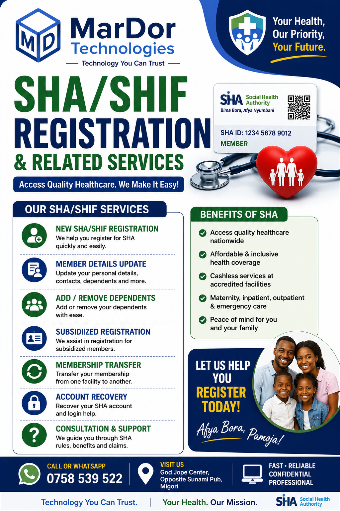

Technology You Can Trust
Your Trusted Partner for Digital & Technology Solutions
Empowering individuals, students, businesses and organizations through innovative ICT solutions, cyber services, computer training and professional technical support.

Empowering individuals, students, businesses and organizations through innovative ICT solutions, cyber services, computer training and professional technical support.
Happy Clients
Projects Completed
Years of Experience
Customer Satisfaction
Professional ICT and Digital Solutions for Individuals, Businesses and Organizations.
Diagnosis, maintenance, upgrades, virus removal and Windows installation.
Professional websites for businesses, schools and organizations.
Printing, scanning, photocopying, passport photos, CV writing and more.
KRA, eCitizen, SHA, HELB, KUCCPS, NSSF and online applications.
Hands-on training in Microsoft Office, Internet, Digital Skills and more.
Laptops, desktops, printers, networking equipment and accessories.
Installation of CCTV systems, Wi-Fi networks and structured cabling.
Security awareness, malware protection and ICT security consulting.
We are committed to delivering reliable, affordable and professional ICT solutions.
Quick turnaround time on repairs, installations and online applications.
Experienced ICT support with practical solutions tailored to your needs.
Quality ICT services at competitive prices without compromising quality.
Your documents and personal information are handled securely.
We provide continuous technical support whenever you need assistance.
Our success is measured by satisfied customers and long-term relationships.
MarDor Technologies is a trusted ICT solutions provider based in Migori, dedicated to helping individuals, businesses, schools and organizations embrace technology with confidence.
We provide cyber services, computer maintenance, web development, government online services, ICT consulting, networking solutions, computer training and supply of quality ICT equipment.
To provide reliable, affordable and innovative technology solutions that empower individuals and businesses.
To become one of Kenya's leading ICT solution providers recognized for excellence and customer satisfaction.
Some of our most requested technology solutions.
Modern websites for businesses, schools and organizations.
Hardware repair, Windows installation, upgrades and maintenance.
KRA, eCitizen, SHA, NSSF, HELB, KUCCPS and more.
Affordable practical computer training for all skill levels.
Stay informed about important deadlines and updates.
File your Nil Returns before the deadline to avoid penalties. Visit MarDor Technologies for assistance.
Read More →Registration for the next computer packages class is now open.
Read More →Take a look at some of our services and completed work.
